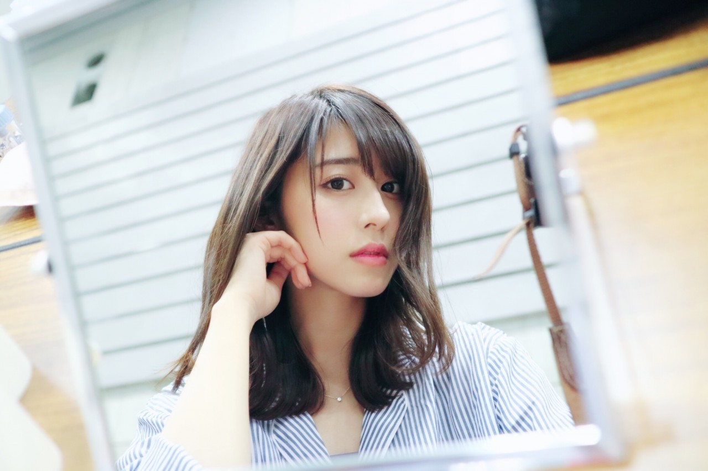
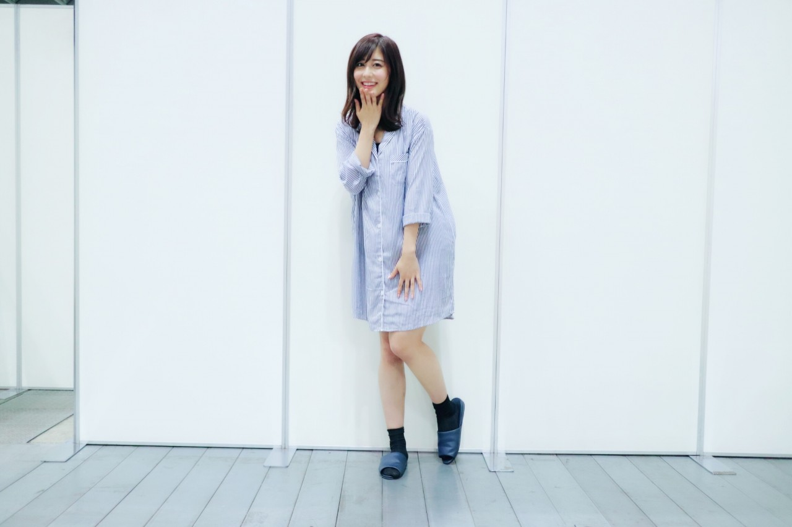
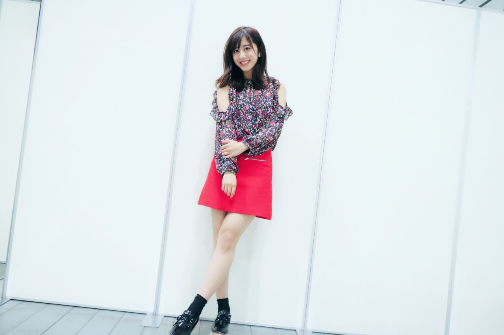
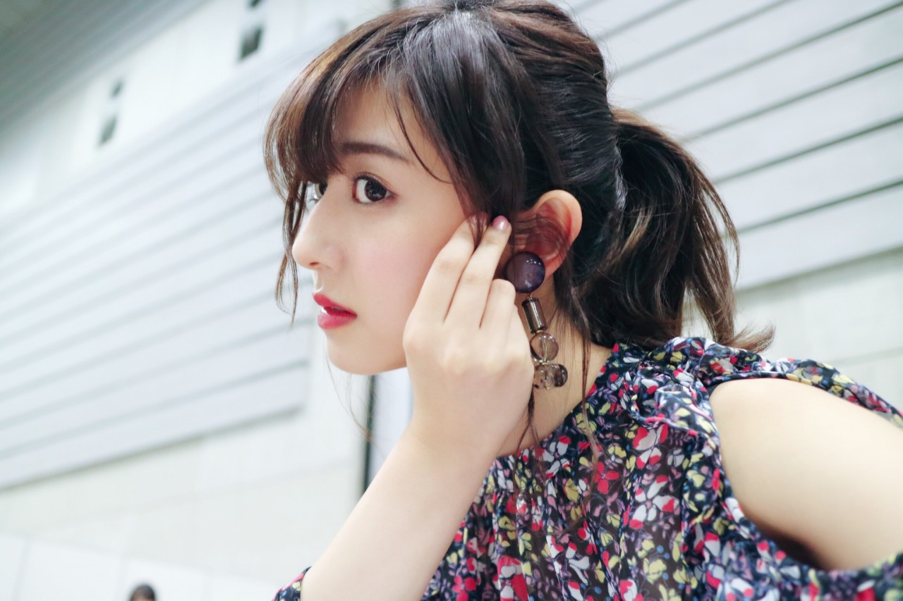

| 2017/04 29 Sat | 斎藤ちはる GW |
ちはるーむへようこそ
今日のちはるーむでは世にも奇妙な物語を観ました。
今日は昭和の日。
GW最初の日ですね
皆さんはGWの幕開けは素敵な日でしたか？
私は素敵な日でしたよ〜
皆さんに会えたので！
横浜にて個別握手会
#chihaOOTD
1部


パジャマ！
大きめのシャツワンピで
彼シャツみたいなイメージでした◎
GUだったのでお手頃価格で
しかも可愛くて手触りも良くて
オススメです
2部

肩の空いた花柄のトップスと
真赤なミニスカートで
春っぽいコーディネートにしました
真夏みたい〜〜
って沢山の方に言われた笑
tops : D Holic
skirt : ZARA
3部

3部はポニーテール！
大きめのイヤリングがポイントです
Another Editionのもの！
今日はアンダーライブの話ができたり
ブログの話ができたり
アルバムの話ができたり
楽しかったですね☺︎
次関東での握手会は6月になってしまうので
それまで来られない方とは
少しお会いできなくなってしまいますね(ToT)
寂しいけど...
次会えるの楽しみにしています！
やっぱり、わざわざ
個別に来てくれて並んでくれるって
本当特別だし嬉しい。
皆さんありがとう(﹡ˆ ˆ﹡)
------------------------------------------------♡
♬ ChihaMusic
「夜を越えて」鶴さん
今更、漫画アフロ田中にハマって
そこから映画アフロ田中を見て
そのエンディングソングだった
この曲にハマりました。
なんていい曲なんだ！って
ビビッときました。
曲調も良いけど歌詞も素敵。
"何でも無い 言葉が優しく
響いては何かを溶かすよ 愛はそこから"
背中を押してくれて
心が温かくなるような。
今日放送だった「ライオンのグータッチ」で
隠れた特技を持つメンバーとして
なーちゃんが私の名前を出してくれて、
なんと来週はその証拠VTRに出演します！
放送が始まった時から
ずっとずっと録画しつつ観ていた、
大好きな番組だったので
とっても嬉しいヽ(；；)丿
レモンを真顔で食べている姿、
目に焼き付けてください笑
おやすみ
斎藤ちはる